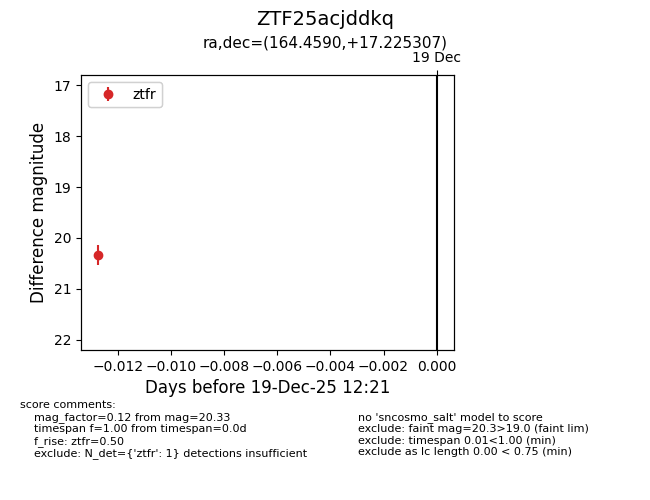
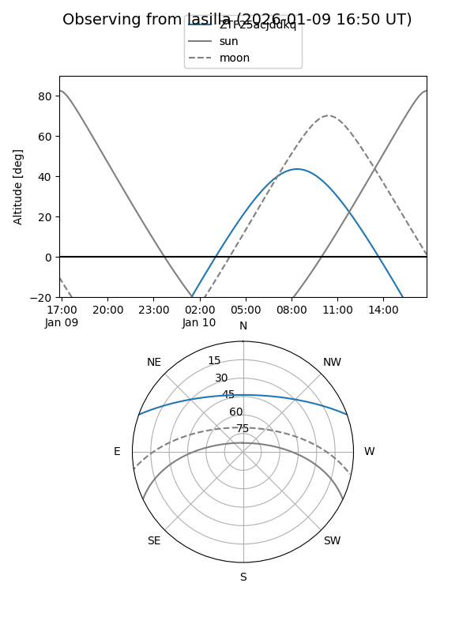
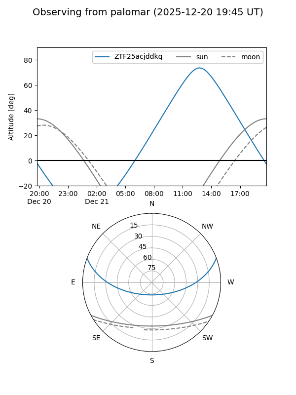

ZTF25acjddkq
Target ZTF25acjddkq at 2026-01-09 12:49
Aliases and brokers:
FINK: link
Lasair: link
ALeRCE: link
alt names
ZTF25acjddkq (ztf,fink_ztf)
Coordinates:
equatorial (ra, dec) = 164.4590,+17.22531
equatorial (HMS+DMS) = 10:57:50.17,+17:13:31.10
galactic (l, b) = (227.6766,+61.98081)
Flags:
Photometry:
last ztfg=20.36, ztfr=20.33
1 ztfg, 1 ztfr detections
Lightcurve

Visibility


Additional plots